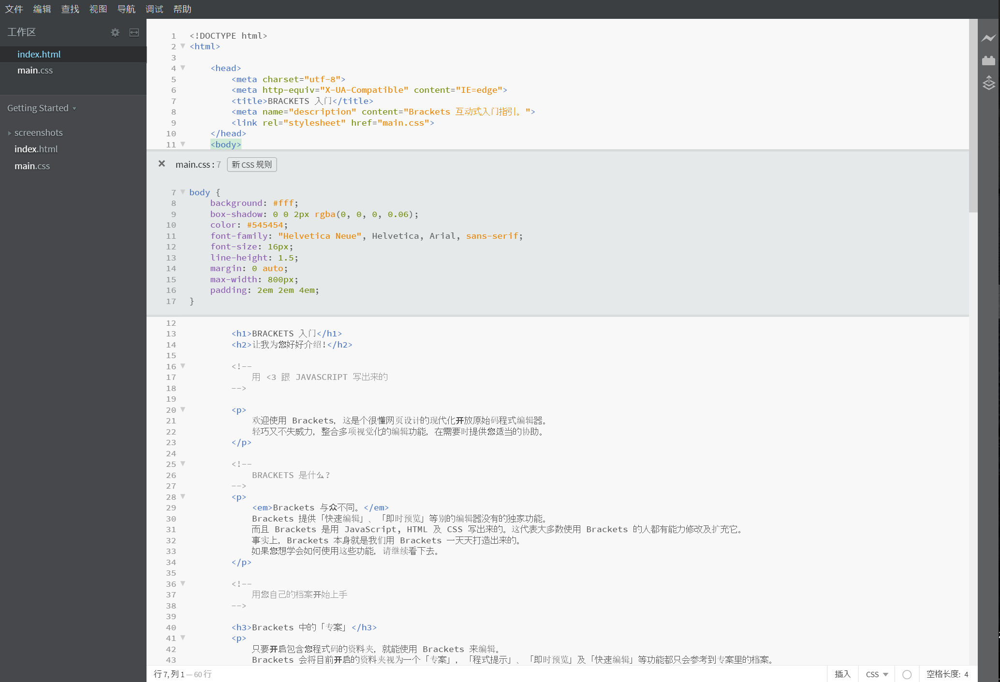

欢迎使用 Brackets，这是个很懂网页设计的现代化开放原始码程式编辑器。 轻巧又不失威力，整合多项视觉化的编辑功能，在需要时提供您适当的协助。
Brackets 与众不同。 Brackets 提供「快速编辑」、「即时预览」等别的编辑器没有的独家功能。 而且 Brackets 是用 JavaScript, HTML 及 CSS 写出来的。这代表大多数使用 Brackets 的人都有能力修改及扩充它。 事实上，Brackets 本身就是我们用 Brackets 一天天打造出来的。 如果您想学会如何使用这些功能，请继续看下去。
只要开启包含您程式码的资料夹，就能使用 Brackets 来编辑。 Brackets 会将目前开启的资料夹视为一个「专案」，「程式提示」、「即时预览」及「快速编辑」等功能都只会参考到专案裡的档案。
要是您已经准备好关掉这个范例专案，开始编辑自已的程式，可以使用左边侧栏的下拉式选单切换资料夹。 现在应该是选到「Getting Started」，也就是您看的这份文件所在的资料夹。 按一下下拉式选单，点选「开启资料夹…」选项，就能开启您自已的资料夹。 之后您也可以透过同样的下拉式选单切回开启过的资料夹，包含这个范例专案。别再因为不断切换档案而一直分神失焦了。编辑 HTML 时，按下 Cmd/Ctrl + E 快速键就地开启编辑器，秀出所有相关的 CSS 规则。 调好 CSS 样式后按 ESC 马上就能回到 HTML 继续编辑。 此外，也可以放手让那些 CSS 规则一直开在 HTML 编辑器裡。 只要在快速编辑器的范围外按下 ESC 键，就能关掉所有快速编辑器。 快速编辑也能找到定义在 LESS 及 SCSS 档案中的规则，就算是巢状规则也没问题。
想亲身体验吗? 把游标移到上面的 标籤中，按下 Cmd/Ctrl + E。 您应该就会看到 CSS 快速编辑器出现在上方，显示出所有套用到的 CSS 规则。 快速编辑功能也支援 class 及 id 属性。搭配 LESS 或 SCSS 档嘛会通喔。 您也可以透过这个方式新增规则。在上方随便一个 标籤上点一下，按 Cmd/Ctrl + E。 可以看到它上面并没有任何 CSS 规则，但您可以按一下「新增规则」按钮，就会新增 规则。 您也能使用相同的快速键编辑其他东西，例如 JavaScript 函式、CSS 色彩、CSS 动画计时函式等，持续增加中。
目前还不能在快速编辑器中巢状开启其他快速编辑器，只有游标在主编辑器时才能开快速编辑功能。
有一种舞叫做「存档再重新载入探戈」，我们跳了好多年，您听过吗? 就是在编辑器裡改一改东西，储存好，马上再切过去浏览器，按「重新整理」后才能真正的看到结果，超鸟的! 用 Brackets，您永远不必再这麽「跳」。
Brackets 会跟您本机的浏览器即时连线，在您修改的同时将 HTML 及 CSS 内容更新过去! 说不定活在 21 世纪的您已经用浏览器提供的开发者工具做过类似的事了。 但是用 Brackets，您不用再手动把总算是会动的程式複製贴回编辑器。 您的程式虽然是跑在浏览器上，但是所有的血与肉都还是在编辑器裡啊!
Brackets 让您更容易看到 HTML 及 CSS 的修改会对页面造成什麽影响。 当游标停在 CSS 规则上时，Brackets 会在浏览器裡将所有会受影响的元素突显出来。 编辑 HTML 档案时，Brackets 也会在浏览器中突显对应的 HTML 元素。
如果您安装了 Google Chrome，马上就可以试看看。 按一下 Brackets 视窗右上角的闪电图示，或是按 Cmd/Ctrl + Alt + P。 当即时预览功能在 HTML 档案上启用后，所有连结到的 CSS 档案也都可以马上编辑马上生效。 Brackets 与您的浏览器建立连线时，图示会由灰转金。 就是现在，把游标移到上面的 标籤。注意看 Chrome 在图片上显示的蓝色框。 接下来，按 Cmd/Ctrl + E 开启相关的 CSS 规则定义。 试著将框线 (border) 值由 10px 改成 20px，或将背景色 (background-color) 由透明 "transparent" 改成 "hotpink"。 如果您把 Brackets 跟浏览器并排放好，就能看到所有异动都直接反应在浏览器上了。酷吧?!目前 Brackets 只能即时预览 HTML 及 CSS。不过，储存修改过的 JavaScript 档案时也会自动重新载入页面。 我们正在努力让即时预览功能支援 JavaScript。 此外，即时预览现在只能在 Google Chrome 上执行，我们希望将来能支援所有主流的浏览器。
为了那些记不得色彩十六进位值或是 RGB 值的人，Brackets 能快速又简单的让您看见色彩的真相。 不管在 CSS 或 HTML 中，只要将滑鼠游标移到任何色彩值或是渐变色上，Brackets 就会自动显示预览。 对图片也同样有用，在 Brackets 裡将滑鼠游标移到图片连结上，就会自动显示预览缩图。
自已试试快速检视，只要将游标移到这份文件最上方的 标籤上，按下 Cmd/Ctrl + E 开启 CSS 快速编辑器，将滑鼠游标移到 CSS 上的任何一个色彩值上就能看到。 想要预览渐变色，您也可以在 标籤上开启 CSS 快速编辑器，移到随便一个背景图片 (background-image) 值就能看到。 要试图片预览，则是将游标移到前几段提到的画面撷图上就能看到。除了 Brackets 内建的这些好物外，我们那深具规模，且日益状大的开发者社群已经写出了数百个扩充功能。 如果您觉得 Brackets 少了什麽，说不定早就有人写好扩充功能了。 点一下 档案 > 扩充功能管理员...，再点一下「可使用」页籤，就能浏览或搜寻扩充功能清单。 一旦找到想要的扩充功能，按一下后面的「安装」按钮就可以了。
Brackets 专案是开放原始码的。世界各地的网页开发者贡献一己之力，只为打造出更好的程式编辑器。 也有不少人正在开发扩充功能，让 Brackets 更强大。 告诉我们您的想法，分享您的构想，或是直接为本专案做点事吧。